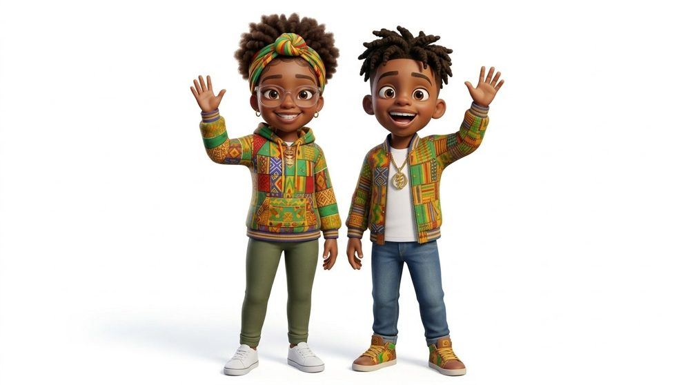

K–2 BEHAVIOR TOOLKIT
Lee & Tee teach the skills. Your class practices them together.
Twelve topics for Kindergarten to 2nd grade. Teach any topic in place of that day's Morning Meeting content. Each one follows the same Morning Meeting phases your students already know and comes with everything you need to teach, practice, and send home.

Every meeting still starts here
A toolkit topic replaces the lesson content only. Keep your Weekly Video and Do Now – First 5.
How to use it
Teach the topics in order when you can. Skills come first, so students have calm-down tools before the safe-choice topics ask them to use those tools. If your class needs a topic now, teach it now. Each one stands on its own.
Pick a topic
Choose the topic your class needs. Teach it in place of that day's Morning Meeting content.
Play and teach
Play the song as a preview, then teach the 7-slide deck. Press N for your script and notes.
Practice in centers
Print one center kit per group. Students sort, sequence, role-play, and color.
Follow up
Hang the poster. Send the family half-sheet home. Use the mini book with students who need Tier 2 practice.
In every topic
The 12 topics
New topics open here as they are ready.
Naming My Feelings
I can name how I feel.
Using the Calm Corner
I can use the calm corner, get calm, and come back.
Belly Breathing
I can breathe slow to calm my body.
Asking for a Break
I can ask for a break with my words or my card.
Getting a Grown-Up's Attention
I can get a grown-up's help the safe way.
Fixing It
I can help make it right.
Gentle Hands with Friends
I use gentle hands. I keep my friends safe.
Gentle Hands with Grown-Ups
I keep my grown-ups safe too.
Things Stay Safe
I keep our things safe and in their place.
School Words
I use kind school words, even when I am mad.
Right-Size Voice
I use the right voice for the place.
I Stay With My Class
I stay with my class so I stay safe.
Offline ZIPs
One ZIP per topic. Download it once and teach without Wi-Fi. Keep the files together in their folder so the deck can play the song.
02 · Using the Calm Corner
Deck, song video, posters, center kit, mini book, teacher guide, and family half-sheets.
07 · Gentle Hands with Friends
Deck, song video, posters, center kit, mini book, teacher guide, and family half-sheets.